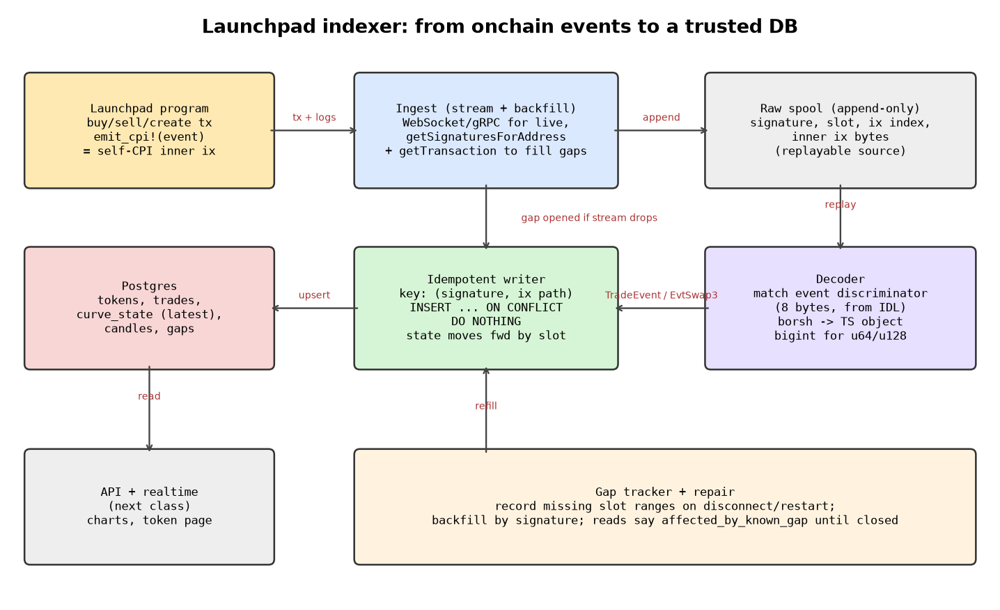

Part 7 · Backend
The indexer
The program emits events. The indexer turns them into a database you can query, and it must never miss a trade or count one twice.
1 Everyday analogy
Picture the scoreboard keeper at a cricket match. He listens to the umpire on the radio and adds runs as they happen. Then the radio drops for 40 seconds. When it comes back, he checks the official scorebook for what he missed (the backfill). The scorebook also repeats a few balls he had already heard on the radio.
A good scorekeeper notes each ball by over and ball number, so a repeated ball is ignored instead of being added twice. And he never moves the score backwards just because an old ball was read out late.
2 Design question
Your WebSocket stream drops for 40 seconds. A backfill then re-sends trades, some of which you already saved. Meteora DBC emits three swap events: EvtSwap, EvtSwap2 and EvtSwap3. Which should you store, and what unique key stops duplicates?
Try to answer on your own first, in plain English. A gut answer is fine.
Reveal answer
- Save the raw transaction first, then decode it. You can always re-decode, but you can't re-download what you never saved.
- One source-of-truth event: we treat
EvtSwap3as the canonical swap record Our reading (unverified). That's our reading of Meteora's code, because Meteora doesn't document which one to prefer. Whatever you pick, store one per swap, so a single swap isn't counted three times. - Key every row by
(signature, ix_path)and insert withON CONFLICT DO NOTHING. A replayed trade then becomes a no-op. One transaction can hold several swaps, which is why the signature alone isn't enough. - Track gaps: record the last slot you indexed. On reconnect, backfill the missing range with
getSignaturesForAddressfollowed bygetTransaction. - Latest state only moves forward, ordered by (slot, tx index, ix path).
- Amounts stay
bigintin TypeScript andNUMERICin Postgres.
3 Simple explanation
- Events: Anchor programs log events. Each one starts with an 8-byte discriminator that tells you its type. pump.fun's
TradeEventdiscriminator is[189,219,127,211,78,230,97,238]. We re-derived it in code (see the math below). Meteora DBC emits its events withemit_cpi(EvtSwap,EvtSwap2,EvtSwap3,EvtCurveComplete), so they appear as inner instructions, not as log lines. - Live vs backfill: a WebSocket gives you speed, and RPC history gives you completeness. Use both, and let the unique key resolve the overlap.
- Idempotency: running the same batch twice must give the same database. That's the property that makes retries and backfills safe.
4 The math
The Anchor event discriminator Real: Anchor convention:
. Our tests check this.
The ordering used to move "latest state" forward is lexicographic:
Gap after a reconnect: if the last indexed slot was and the first new slot is , backfill when .
5 TypeScript code
Postgres schema General pattern / our clone:
CREATE TABLE raw_tx (
signature TEXT PRIMARY KEY,
slot BIGINT NOT NULL,
raw JSONB NOT NULL,
decoded BOOLEAN NOT NULL DEFAULT FALSE
);
CREATE TABLE trades (
signature TEXT NOT NULL,
ix_path TEXT NOT NULL, -- e.g. '2' or '2.1' for an inner instruction
slot BIGINT NOT NULL,
tx_index INT NOT NULL,
mint TEXT NOT NULL,
is_buy BOOLEAN NOT NULL,
token_amount NUMERIC(39,0) NOT NULL, -- never float
sol_amount NUMERIC(39,0) NOT NULL,
fee NUMERIC(39,0) NOT NULL,
block_time TIMESTAMPTZ,
PRIMARY KEY (signature, ix_path)
);
-- replay-safe insert
INSERT INTO trades (...) VALUES (...) ON CONFLICT (signature, ix_path) DO NOTHING;The indexer core, tested with overlapping live and backfill batches:
// Chapter 7 — the indexer core. OUR CLONE'S DESIGN (general indexing pattern).
// Real Postgres would use: INSERT ... ON CONFLICT (signature, ix_path) DO NOTHING.
import { createHash } from "node:crypto";
/** Anchor event discriminator = first 8 bytes of sha256("event:<Name>"). */
export const eventDiscriminator = (name: string) => [...createHash("sha256").update(`event:${name}`).digest().subarray(0, 8)];
export interface TradeRow {
signature: string; ixPath: string; slot: number; txIndex: number;
mint: string; isBuy: boolean; tokenAmount: bigint; solAmount: bigint; fee: bigint;
virtualSolReserves: bigint; virtualTokenReserves: bigint; blockTime: number;
}
export class TradeStore {
rows = new Map<string, TradeRow>(); // trades table, PK (signature, ix_path)
latest = new Map<string, TradeRow>(); // latest state per mint (moves forward only)
insertOnConflictDoNothing(r: TradeRow): boolean {
const key = `${r.signature}#${r.ixPath}`;
if (this.rows.has(key)) return false;
this.rows.set(key, r);
return true;
}
upsertLatest(r: TradeRow) {
const cur = this.latest.get(r.mint);
const newer = !cur || r.slot > cur.slot || (r.slot === cur.slot && (r.txIndex > cur.txIndex ||
(r.txIndex === cur.txIndex && r.ixPath > cur.ixPath)));
if (newer) this.latest.set(r.mint, r); // a late/backfilled older trade never moves state backwards
}
}
/** Idempotent: safe to call with WebSocket data AND overlapping backfill data. */
export function indexBatch(store: TradeStore, batch: TradeRow[]): { inserted: number; duplicates: number } {
let inserted = 0, duplicates = 0;
for (const r of batch) {
if (store.insertOnConflictDoNothing(r)) { inserted++; store.upsertLatest(r); } else duplicates++;
}
return { inserted, duplicates };
}
/** Gap tracking: which slots have we NOT seen since the last checkpoint? */
export function findGap(lastIndexedSlot: number, firstSlotAfterReconnect: number) {
return firstSlotAfterReconnect > lastIndexedSlot + 1
? { fromSlot: lastIndexedSlot + 1, toSlot: firstSlotAfterReconnect - 1 } : null;
}Download: indexer.ts · tested with npx tsx
6 TypeScript exercise
Implement indexBatch(store, batch). It must return { inserted, duplicates }, never insert the same (signature, ixPath) twice, and only update the latest state per mint when the new row is newer by (slot, txIndex, ixPath). Test it with: 15 live rows, then a backfill of rows 10 to 20 (5 duplicates expected), then one "late" row from slot 0.
Show a solution
See indexBatch and TradeStore.upsertLatest above. The test is in code/pipeline.test.ts and expects {inserted: 15}, then {inserted: 6, duplicates: 5}, with the latest state left unchanged by the late row.
7 Architecture diagram


8 Sources
- Solana RPC: getSignaturesForAddress
- Solana RPC: getTransaction
- PostgreSQL: INSERT ... ON CONFLICT
- PostgreSQL: NUMERIC type
- Anchor docs: events
- Meteora Dynamic Bonding Curve program (GitHub)
- pump.fun public docs repo (IDLs, READMEs)